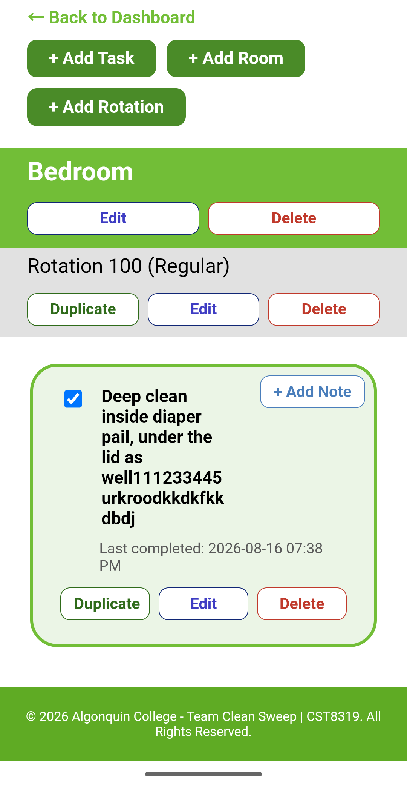

Cleaning Rotation Tracking System (Capstone)
Capstone project delivered to Nettoyage Eco Vert, a real cleaning company, and accepted through a signed validation report. A five-person Scrum team built a mobile-friendly web app that replaces manual tracking of rotational cleaning tasks. I owned the rooms, rotations, tasks, and preset-template module, the shared PostgreSQL connection layer, and the seed data, and I wrote and executed the test cases across two prototypes.
Python | Flask | PostgreSQL | Jinja2 | Flask-Login | ZenHub